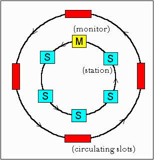
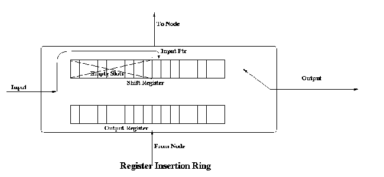

Each node in a ring introduces a 1 bit delay. So, one approach might be to set the minimum limit on the number of nodes in a ring as 24. But, this is not a viable option. The actual solution is as follows. We have one node in the ring designated as "monitor". The monitor maintains a 24 bits buffer with help of which it introduces a 24 bit delay. The catch here is what if the clocks of nodes following the source are faster than the source? In this case the 24 bit delay of the monitor would be less than the 24 bit delay desired by the host. To avoid this situation the monitor maintains 3 extra bits to compensate for the faster bits. The 3 extra bits suffice even if bits are 10 % faster. This compensation is called Phase Jitter Compensation.
| P | P | P | T | M | R | R | R |
Initially the reservation bits are set to 000. When a node wants to transmit a priority n frame, it must wait until it can capture a token whose priority is less than or equal to n. Furthermore, when a data frame goes by, a station can try to reserve the next token by writing the priority of the frame it wants to send into the frame's Reservation bits. However, if a higher priority has already been reserved there, the station cannot make a reservation. When the current frame is finished, the next token is generated at the priority that has been reserved.
A slight problem with the above reservation procedure is that the reservation priority keeps on increasing. To solve this problem, the station raising the priority remembers the reservation priority that it replaces and when it is done it reduces the priority to the previous priority.
Note that in a token ring, low priority frames may starve.
Detection of orphan frames: The monitor detects orphan frames by setting the monitor bit in the Access Control byte whenever it passes through. If an incoming frame has this bit set, something is wrong since the same frame has passed the monitor twice. Evidently it was not removed by the source, so the monitor drains it.
Lost Tokens: The monitor has a timer that is set to the longest possible tokenless interval : when each node transmits for the full token holding time. If this timer goes off, the monitor drains the ring and issues a fresh token.
Garbled frames: The monitor can detect such frames by their invalid format or checksum, drain the ring and issue a fresh token.
The token ring control frames for maintenance are:
|
|
|
|
| 00000000 | Duplicate address test | Test if two stations have the same address |
| 00000010 | Beacon | Used to locate breaks in the ring |
| 00000011 | Claim token | Attempt to become monitor |
| 00000100 | Purge | Reinitialize the ring |
| 00000101 | Active monitor present | Issued periodically by the monitor |
| 00000110 | Standby monitor present | Announces the presence of potential monitors |
The monitor periodically issues a message "Active Monitor Present" informing all nodes of its presence. When this message is not received for a specific time interval, the nodes detect a monitor failure. Each node that believes it can function as a monitor broadcasts a "Standby Monitor Present" message at regular intervals, indicating that it is ready to take on the monitor's job. Any node that detects failure of a monitor issues a "Claim" token. There are 3 possible outcomes :
Slotted Ring :
In this system, the ring is slotted into a number of fixed size frames which are continuously moving around the ring. This makes it necessary that there be enough number of nodes (large ring size) to ensure that all the bits can stay on the ring at the same time. The frame header contains information as to whether the slots are empty or full. The usual disadvantages of overhead/wastage associated with fixed size frames are present.

Register Insertion Rings :
This is an improvement over slotted ring architecture. The network interface consists of two registers : a shift register and an output buffer. At startup, the input pointer points to the rightmost bit position in the input shift register .When a bit arrives it is in the rightmost empty position (the one indicated by the input pointer). After the node has detected that the frame is not addressed to it, the bits are transmitted one at time (by shifting). As new bits come in, they are inserted at the position indicated by the pointer and then the contents are shifted. Thus the pointer is not moved. Once the shift register has pushed out the last bit of a frame, it checks to see if it has an output frame waiting. In case yes, then it checks that if the number of empty slots in the shift register is at least equal to the number of bits in the output frame. After this the output connection is switched to this second register and after the register has emptied its contents, the output line is switched back to the shift register. Thus, no single node can hog the bandwidth. In a loaded system, a node can transmit a k-bit frame only if it has saved up a k-bits of inter frame gaps.

Two major disadvantages of this topology are complicated hardware and difficulty in the detection of start/end of packets.
The token ring has primarily two problems:
A 802.4 frame has the following fields:
When the first node on the token bus comes up, it sends a Claim_token packet to initialize the ring. If more than one station send this packet at the same time, there is a collision. Collision is resolved by a contention mechanism, in which the contending nodes send random data for 1, 2, 3 and 4 units of time depending on the first two bits of their address. The node sending data for the longest time wins. If two nodes have the same first two bits in their addresses, then contention is done again based on the next two bits of their address and so on.
After the ring is set up, new nodes which are powered up may wish to join the ring. For this a node sends Solicit_successor_1 packets from time to time, inviting bids from new nodes to join the ring. This packet contains the address of the current node and its current successor, and asks for nodes in between these two addresses to reply. If more than one nodes respond, there will be collision. The node then sends a Resolve_contention packet, and the contention is resolved using a similar mechanism as described previously. Thus at a time only one node gets to enter the ring. The last node in the ring will send a Solicit_successor_2 packet containing the addresses of it and its successor. This packet asks nodes not having addresses in between these two addresses to respond.
A question arises that how frequently should a node send a Solicit_successor packet? If it is sent too frequently, then overhead will be too high. Again if it is sent too rarely, nodes will have to wait for a long time before joining the ring. If the channel is not busy, a node will send a Solicit_successor packet after a fixed number of token rotations. This number can be configured by the network administrator. However if there is heavy traffic in the network, then a node would defer the sending of bids for successors to join in.
There may be problems in the logical ring due to sudden failure of a node. What happens when a node goes down along with the token? After passing the token, a node, say node A, listens to the channel to see if its successor either transmits the token or passes a frame. If neither happens, it resends a token. Still if nothing happens, A sends a Who_follows packet, containing the address of the down node. The successor of the down node, say node C, will now respond with a Set_successor packet, containing its own address. This causes A to set its successor node to C, and the logical ring is restored. However, if two successive nodes go down suddenly, the ring will be dead and will have to be built afresh, starting from a Claim_token packet.
When a node wants to shutdown normally, it sends a Set_successor packet to its predecessor, naming its own successor. The ring then continues unbroken, and the node goes out of the ring.
The various control frames used for ring maintenance are shown below:
Frame Control Field |
Name |
Meaning |
| 00000000 | Claim_token | Claim token during ring maintenance |
| 00000001 | Solicit_successor_1 | Allow stations to enter the ring |
| 00000010 | Solicit_successor_2 | Allow stations to enter the ring |
| 00000011 | Who_follows | Recover from lost token |
| 00000100 | Resolve_contention | Used when multiple stations want to enter |
| 00001000 | Token | Pass the token |
| 00001100 | Set_successor | Allow the stations leave the ring |
Token bus supports four distinct priority levels: 0, 2, 4 and 6.
0 is the lowest priority level and 6 the highest. The following times are defined by the token bus:
When a station receives data, it proceeds in the following manner:
This mechanism ensures that priority 6 data is always sent, making the system suitable for real time data transmission. In fact this was one of the primary aims in the design of token bus.